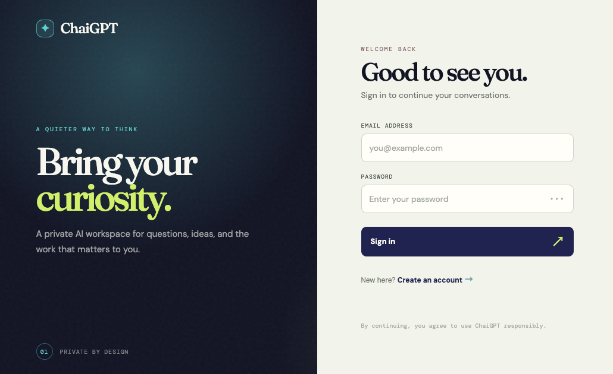
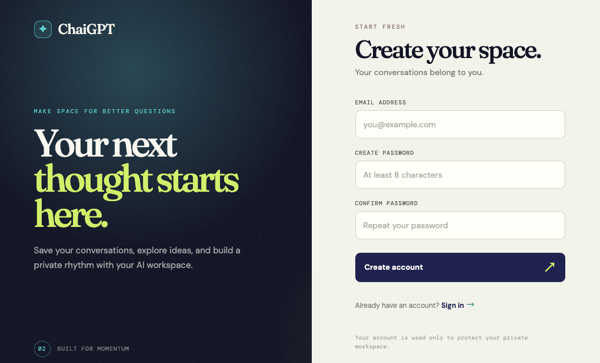
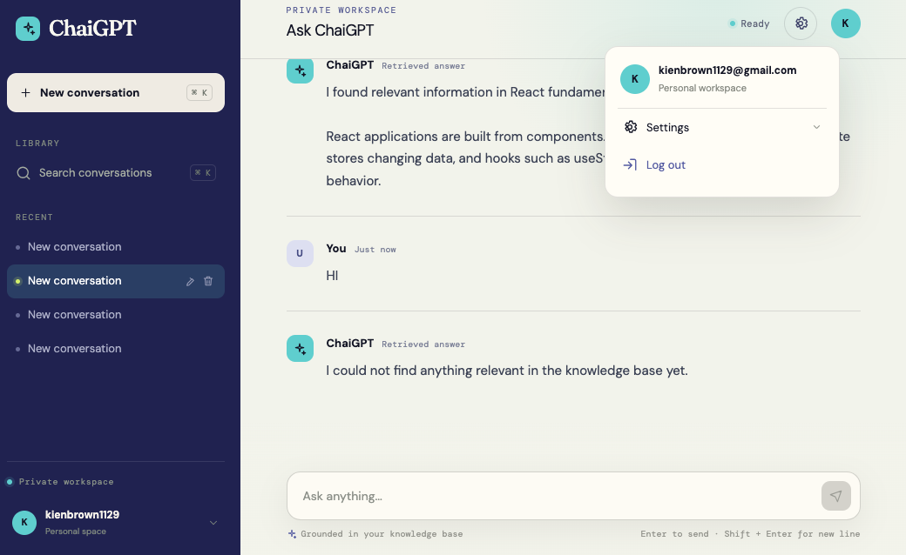
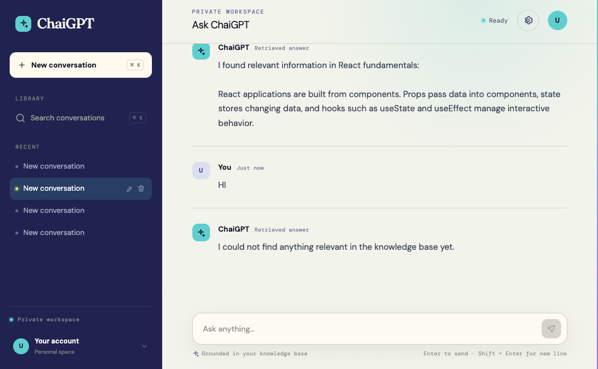
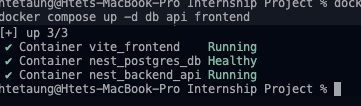

ChaiGPT AI Assistant Platform
ChaiGPT is a private, full-stack AI assistant platform that brings together secure authentication, persistent conversation management, and retrieval-augmented generation workflows in a polished product experience. The project blends enterprise backend infrastructure with a modern user interface designed to resemble a real-world ChatGPT-style workspace.
1. Project Overview
This project represents a fully functional private AI assistant application designed as a distributed full-stack system. It combines secure user authentication, private session histories, a ChatGPT-inspired workspace, baseline retrieval-augmented generation (RAG), and a self-contained Python learning demo to demonstrate the underlying AI pipeline.
The platform is structured to satisfy the goals defined across Weeks 1, 2, and 3 of the internship roadmap and demonstrates a practical, end-to-end approach to building a production-inspired AI experience.
What the application delivers
- Secure account registration and login flows
- Private conversation histories per user
- Modern chat interface with session controls
- AI context retrieval using knowledge bases and embeddings
Project focus
- Backend reliability through NestJS and PostgreSQL
- Frontend polish with React, Vite, and TypeScript
- Production-style architecture and developer workflow
- Practical learning outcomes for RAG and AI development
2. UI Design & Interface Showcase
The interface is intentionally designed to feel familiar, secure, and premium. Each screen reflects a product mindset, balancing technical capability with user confidence and clarity.





3. Week 1: Backend Foundation
The first phase focused heavily on building a resilient runtime foundation and a secure data layer for the platform.
- Initialized a scalable NestJS server architecture and module-based project structure.
- Configured Docker Compose to orchestrate multi-container local services.
- Integrated Prisma ORM with PostgreSQL for schema-driven persistence.
- Implemented authentication using bcrypt, JWT, and Passport-based validation strategies.
- Built reusable controller and interceptor patterns for secure token handling and user context.
Core Authentication Routes
POST /auth/register— Create a new user account and secure credential storage.POST /auth/login— Authenticate a user and issue a JWT token.GET /auth/me— Retrieve the current authenticated user profile.
4. Week 2: Frontend & Full-Stack Integration
Week 2 centered on creating a responsive, high-performance client and connecting it cleanly to the backend services.
- Built a modern React + TypeScript frontend using Vite for rapid development and hot reload workflows.
- Integrated Zustand to manage global app state efficiently and securely.
- Configured Axios interceptors for automatic authentication token injection and request handling.
- Developed a personal AI workspace with chat creation, rename/delete flows, search support, and message tracking.
5. Week 3: AI & RAG Pipeline
Week 3 introduced context-aware generation, retrieval pipelines, and intelligent grounding for user questions.
- Seeded knowledge schemas covering React, RAG, PostgreSQL, and Prisma topics.
- Enabled the PostgreSQL
pgvectorextension and configured the embedding storage layer. - Connected optional OpenAI embedding and generation endpoints using
text-embedding-3-smallandgpt-4o-mini. - Added graceful lexical fallbacks when remote AI services are unavailable or quota-limited.
- Refined the interface branding to ChaiGPT with custom loading states and AI interaction feedback.
6. Python RAG Demonstration
Contained within the Week3/python-rag workspace, this standalone demo shows the core mechanics behind a working retrieval-augmented generation workflow.
- Loads source content from
knowledge.txtand prepares raw documentation. - Splits the content into overlapping text chunks for better context coverage.
- Matches user questions against those chunks using semantic scoring or lexical ranking.
- Returns grounded results with a fallback strategy when external AI APIs are unavailable.
python rag_demo.py --question "What is RAG?"
7. Technology Stack
React 19, TypeScript, Vite, React Router, Zustand, Axios, Tailwind CSS.
NestJS 12, TypeScript, Prisma 7.10.0, PostgreSQL 15, Passport JWT, bcrypt.
Python 3.9+, OpenAI SDK, text-embedding-3-small, gpt-4o-mini, local lexical fallback.
Docker Compose, containerized services, isolated database volumes.
JWT-based auth, hashed credentials, protected user sessions, guarded routes.
Modern dark-theme design, responsive layout, premium product feel.
8. Running the Project
To deploy the environment locally, run the following commands from the repository root:
git clone https://github.com/Htet-2aung/Internship-Project.git cd Internship-Project cp .env.example .env docker compose build docker compose up -d db api frontend
After the containers are running, open the main application at http://localhost:5173/chat.